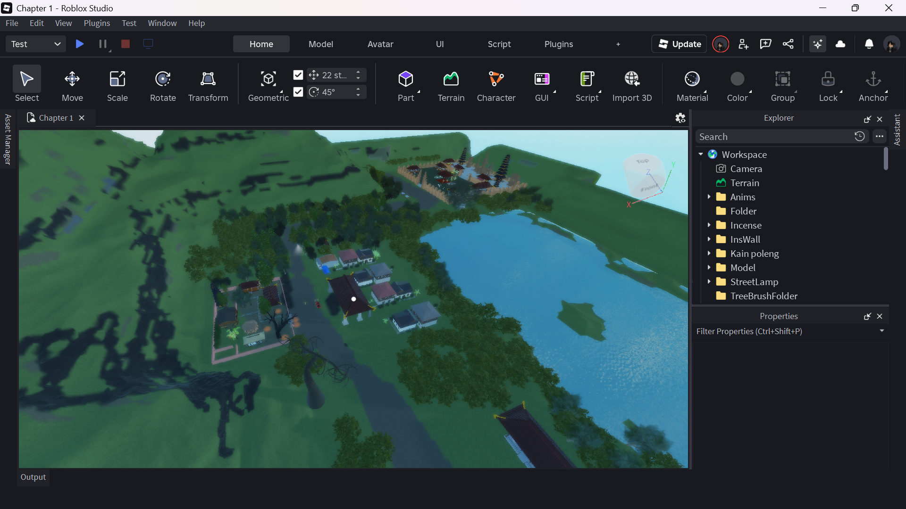
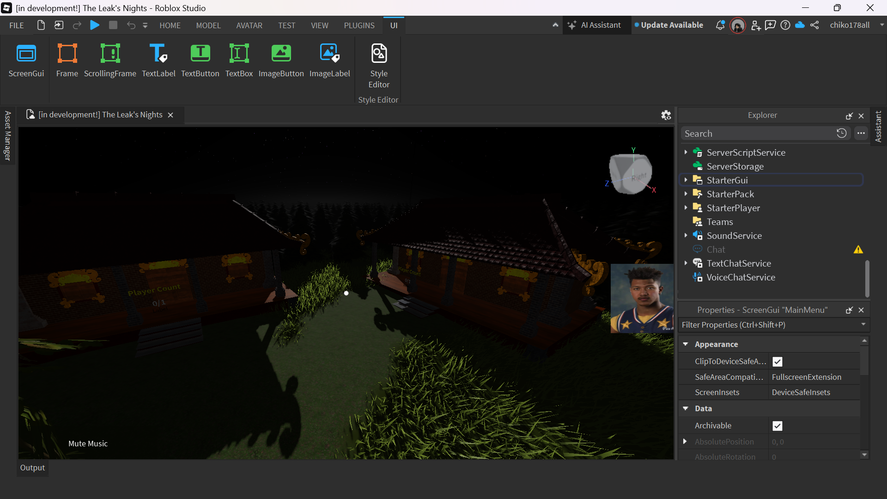

The Leak's Nights
The Leak’s Nights adalah game horror first-person bertema budaya Bali, berlatar di sebuah desa yang tengah bersiap untuk pementasan Calonarang. Pemain berperan sebagai mahasiswa yang pulang kampung dan tanpa sengaja memicu rangkaian kejadian supranatural terkait Leak—makhluk bayangan yang menghantui mereka yang meremehkan tradisi. Tujuan pemain adalah mengungkap rahasia desa, memecahkan teka-teki ritual, dan pada akhirnya menyalakan dupa suci untuk menghentikan kutukan. Gameplay berdurasi sekitar 1–2 jam dengan fokus pada atmosfer, eksplorasi, dan environmental storytelling.
Video Demo
Galeri Foto & Screenshot

